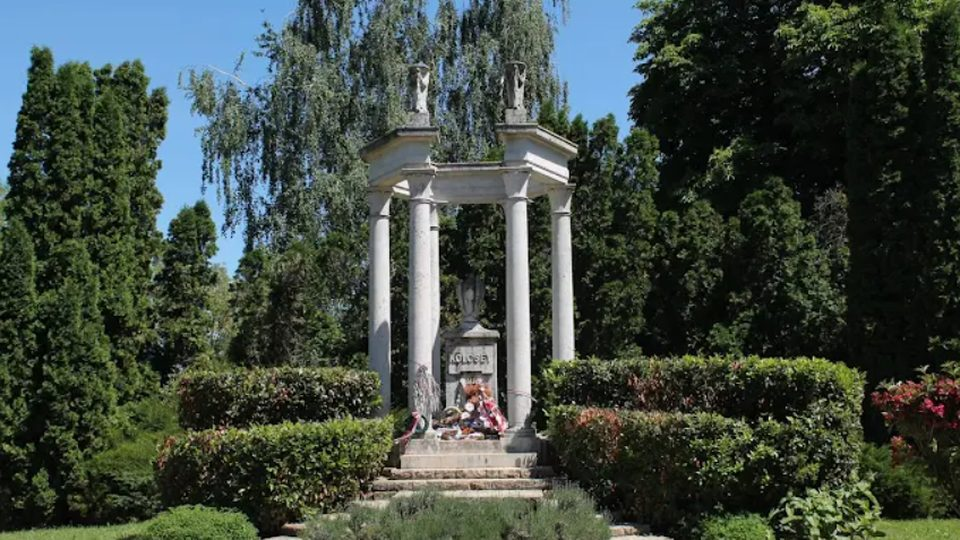
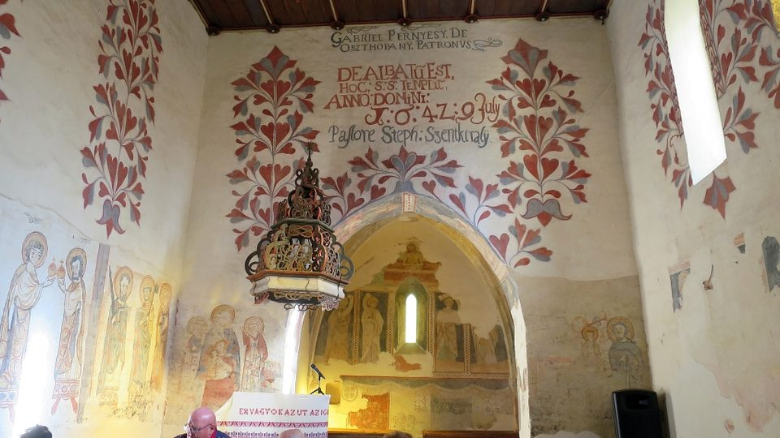
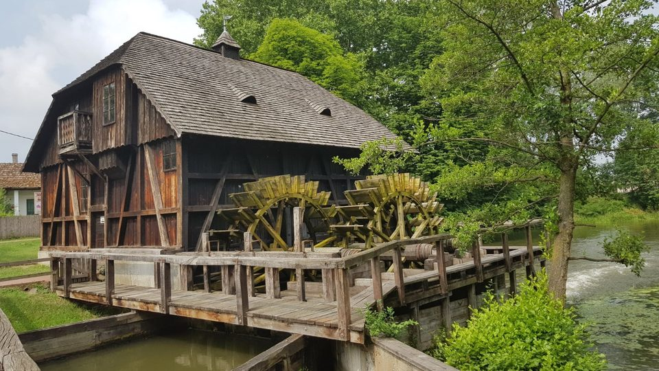
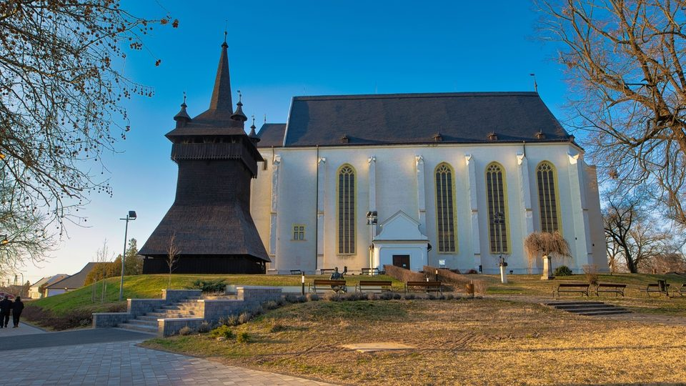
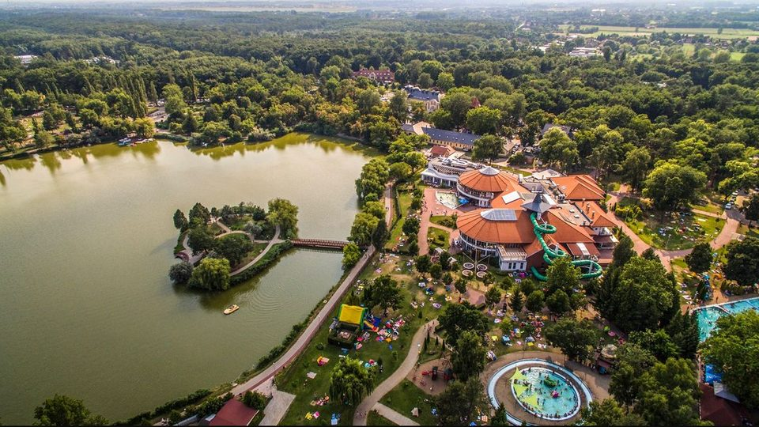
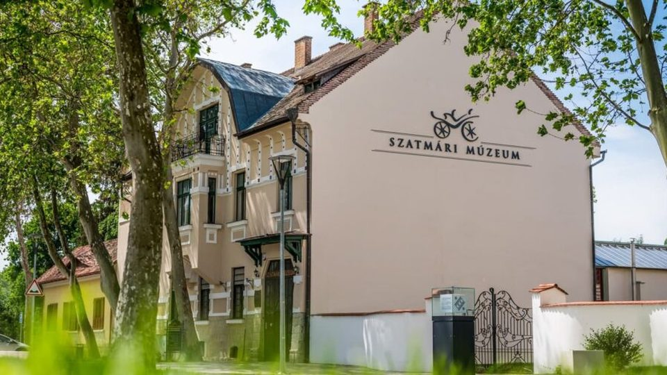

Szatmárcseke
Fehérgyarmati járás
Itt nyugszik Kölcsey Ferenc, a Himnusz költője. A temető különlegessége a csónak alakú fejfák sora, ilyet máshol alig láthatsz.
Fejfák a Tisza mellett, vízimalom, ezer éves falfestmények és szilvaillatú kerti utak.
Nézd meg a helyeketMagyarország északkeleti sarkában, a Tisza, a Szamos és a Túr között fekszik a Szatmár-Beregi táj. Mátészalka a vidék egyik központja, innen minden érdekesség egy rövid autóút.
Az alábbi helyeket azoknak ajánlom, akik szeretik a történelmet, a természetet, vagy csak egy nyugodt hétvégét keresnek.

Fehérgyarmati járás
Itt nyugszik Kölcsey Ferenc, a Himnusz költője. A temető különlegessége a csónak alakú fejfák sora, ilyet máshol alig láthatsz.

Tiszahát
A kis falu református temploma a középkorban épült, belül régi falfestmények maradtak meg. Érdemes csendben végigsétálni benne.

A Túr folyó partján
A malom ma is működik, és bemutatja, hogyan őrölték régen a lisztet. A folyóparti séta egész családnak jó program.

Mátészalkától rövid autóútra
A Báthory család városa. A minorita templom, a református templom és a különálló fa harangtorony együtt a vidék egyik legszebb történelmi együttese.

Megyeszékhely
A Sóstói-tó és az erdő kellemes pihenőhely. Az Állatpark és a Múzeumfalu egy napra való kirándulás, a régi falusi házak között a tájegység hagyományait is megismerheted.

Itthon
A város központjában a Szatmári Múzeum a környék múltját mutatja be. Innen indulva a többi hely is könnyen elérhető.
Pihenj egyet a nézelődés után. Te vagy az X, a gép az O ellen játszol.
Te kezdesz (X).